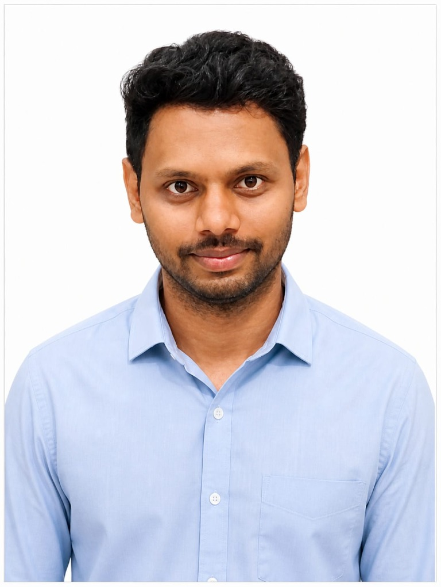

Backend & architecture
Domain-focused services, resilient APIs, and architecture that stays understandable as it grows.
BACKEND ENGINEER · BENGALURU, INDIA
I’m Seshadri—a software engineer working at the intersection of reliable distributed systems, cloud platforms, and practical AI.

SOFTWARE ENGINEERI’m a backend engineer who enjoys making complex platforms dependable—from the first API contract to the production dashboards that keep it running.
At NTT DATA and Accenture, I’ve built Java and Spring Boot services, untangled high-throughput workloads, and helped teams ship across AWS, Azure, GCP, and Kubernetes environments. I’m also exploring how agentic AI can make everyday engineering and operations more useful.
A project in mind? Let’s connectA systems-first toolkit for taking ideas into production.
Domain-focused services, resilient APIs, and architecture that stays understandable as it grows.
Event-driven workflows, efficient caching, and messaging that helps services scale independently.
Containerized services and repeatable deployment across public cloud and multi-cloud platforms.
Thoughtful persistence, access controls, and enterprise AI integrations with human outcomes in mind.
Enterprise teams. Real-world complexity. Reliable delivery.
NTT DATA · Bengaluru, India
Developing cloud microservices and exploring AI-powered ways to automate operational reasoning.
Accenture · Bengaluru, India
Built backend capabilities across multi-cloud provisioning, digital solutioning, and banking platforms.
A few of the systems I’ve helped bring to life.
AI-POWERED ENTERPRISE PLATFORM
An AI-assisted solutioning engine for technology recommendations, effort estimates, and cost projections.
CLOUD PROVISIONING PLATFORM
Backend services for a self-service, multi-tenant platform provisioning cloud environments and streaming operational metrics.
HYBRID CLOUD · ONE BANK
Cloud provisioning services connecting a banking platform to AWS, Azure, GCP, and on-premises infrastructure.
Grounded in core engineering. Curious about what comes next.
HAVE A GOOD CHALLENGE?
I’m always happy to talk about backend engineering, cloud platforms, and thoughtful AI.
Start a conversation